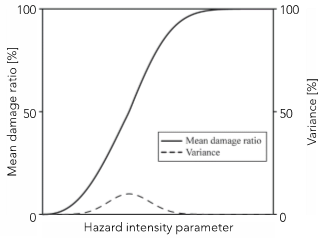
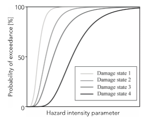

Estimating climate risks to infrastructure systems entails assessing the performance of infrastructure assets, individually and in combination. This mini-lecture explores the quantification of climate risks to infrastructure assets in more detail. We look at the performance of the assets when confronted with an extreme load.
As outlined in mini-Lecture 8.2, infrastructure risk is a combination of hazards, exposure and vulnerability. This lecture deals with the vulnerability element of risk assessments.
This mini-lecture introduces the concept of infrastructure vulnerability, exploring different definitions and applications. The following section dives into the concept and formalisation of fragility curves. In mini-lecture 10.3 this is expanded beyond the asset level to provide an overview of the implications of the spatial footprint of extreme events for infrastructure risk assessments, which will be further explored in mini-lecture 10.4.
Definitions of vulnerability in the climate change-related literature tend to fall into two categories: (1) biophysical vulnerability, or (2) social vulnerability, viewing vulnerability either:
In terms of the amount of (potential) damage caused to a system by a particular climate-related event or hazard (Jones and Boer 2003), or
As a state that exists within a system before it encounters a hazard event (Allen 2003).
Biophysical vulnerability is concerned with the ultimate impacts of a hazard event and is often viewed in terms of the amount of damage experienced by a system as a result of an encounter with a hazard. Thus, it is measured as an indicator of the outcomes of a hazard, rather than indicators of the state of a system prior to the occurrence of a hazard event.
Conversely, the view of social vulnerability as a function of the internal state of a system –independent of external hazards - has arisen from studies of the structural factors that make systems susceptible to damage from external hazards (Allen 2003).
For our purposes, we adopt the biophysical definition of vulnerability, which is also the definition of vulnerability that is adopted by the Intergovernmental Panel on Climate Change (IPCC) Third Assessment Report: “Vulnerability refers to the propensity of exposed elements such as human beings, their livelihoods, and assets to suffer adverse effects when impacted by hazard events” (McCarthy 2001).
Vulnerability can be conceptualised as asset-level sensitivity, or the level of asset deterioration associated with a given load. Note that, in the context of climate risks to infrastructure, the term “load” represents the severity of a given hazard or hazard variable, such as flood inundation depth.
This vulnerability estimation approach measures direct damages to assets by correlating the Mean Damage Ratio (MDR) and its variance with a hazard intensity parameter. The MDR is usually expressed in economic terms, as the ratio of the expected total repair cost to the total replacement cost of an infrastructure asset. Such a function is illustrated in Figure 10.1.1, where the variance distribution deals with the uncertainty associated with the function.

Figure 10.1.1: A sensitivity curve which formalises the relationship between hazard intensity (e.g. flood inundation depth) versus the mean damage ratio, which is the damage caused by the hazard as a fraction of the total cost of rebuilding the asset (GPSS 2019)
Note that here we are referring only to direct economic damages, as opposed to considering indirect damages. The differences between direct and indirect damages are discussed in mini-lecture 11.1.
Vulnerability can alternatively be conceptualised in terms of asset fragility. The fragility of an asset describes the conditional probability of asset failure with respect to loading. This information is conveyed via a fragility curve. This is illustrated for multiple modes of failure, or damage states, in Figure 10.1.2. Uncertainty in this formalisation is communicated by the probability distribution function of each damage state of the fragility functions.

Figure 10.1.2: Range of potential different states of asset failure that can be used to derive a probability of failure conditional on hazard loading (GPSS 2019)
The formalisation and applications of fragility curves for different kinds of assets are explored further in the following mini-lecture 10.2.
Thus, the steps that must be taken to formalise the vulnerability of an asset via a sensitivity or fragility curve are as follows:
Assemble information on the different damage states of the assets with respect to different hazard loading conditions. For example, if we wanted to create a road vs wind damage state definition then we might consider different damage states for different wind speeds.
Assemble information on the damage ratio curves, which are derived from analysis of damages to asset types based on stress testing or for observed data on damages.
Intersect the hazard and asset to create an inventory of hazard exposures to the assets.
Estimate the vulnerability via either sensitivity or fragility curves.
The next step would be to combine this information with the load to which an asset is subject during an extreme event. This would allow either the probability of asset failure or the economic damage incurred to be quantified for fragility and sensitivity, respectively.
For example, a fragility curve for a flood defence structure can be developed by assigning, each defence section \(d_{i}\), a conditional probability of failure event, \(D_{i}\), for a given set of loads, \(x\) (Hall et al. 2003).
\[P(D_{i}|x)\]
Fragility curves can be combined with the loading distribution to generate an actual probability of defense failure, \(P(D_{i})\) (Hall et al. 2003).
P(Di)= ∫∞0p(x) P(Di|x) dxPDi= ∫0∞px PDix dx
This function is what is described by a fragility curve, such as in Figure 10.1.3, whereby the probability of failure, \(P(D_{i}|x)\), can be extracted for a given loading scenario, \(x\).
Figure 10.1.3: Overtopping fragility curve used in national flood risk assessment (fluvial and sea defence). Note that Uncertainty is reflected through the use of upper and lower bounds on the conditional failure for fluvial and coastal flooding (Hall et al. 2003)
This mini-lecture introduced the concept of infrastructure vulnerability which is a key element of risk assessments. You should now be able to explain the concept of asset vulnerability and be aware of the different definitions of vulnerability. You should also be able to recognise the difference between the sensitivity and fragility approaches to vulnerability assessments.